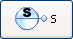

Symbol
Anzeige
Kritische Alarme

Digitale Eingänge

Treiber

Virtuelle Sensoren (berechnete MKT-Werte

Knöpfe

Sensoren

Schalter

Zeitzonen
Wenn man im Grafikmodus auf den 963 Server zugreift, ermöglicht es die Geräteansicht, Eingänge und Ausgänge, Einstellungen, Zeitzonen und kritische Alarme für bestimmte Teile des Systems anzuzeigen. Wenn beispielsweise das Internetzwerk ausgewählt wurde, werden alle Werte aus dieser Quelle angezeigt; und wenn ein bestimmtes LAN ausgewählt wurde, werden nur Werte von diesem LAN angezeigt. Welche Art von Werten angezeigt werden, kann durch eine Filterkategorie festgelegt werden (Eingänge und Ausgänge, Einstellungen, Zeitzonen und kritische Alarme).
So zeigen Sie Werte an:
1 Stellen Sie die Verbindung zum 963 Server her wie im Abschnitt „Verbindung zum 963 Server herstellen" in dieser Anleitung beschrieben..
2 Melden Sie sich an, indem Sie Ihren Bedienernamen und Ihr Passwort eingeben und dann auf Anmelden klicken, wie im Abschnitt „Anmelden" in dieser Anleitung beschrieben.. Es erscheint die 963 Server-Startseite. Sie ermöglicht den Zugriff auf Anlagenbilder, die Geräteansicht und zeigt die Alarmansicht an, sofern Sie Zugriff darauf haben.
3 Klicken Sie auf Geräteansicht. Die Geräteansicht wird in einem separaten Fenster angezeigt.
4 Doppelklicken Sie auf die Anlage mit dem gewünschten Wert.
5 Klicken Sie die Anlage, das LAN oder das Gerät mit den Werten, die angezeigt werden sollen.
6 Klicken Sie auf eine oder mehrere Filter-Schaltflächen, um die gewünschten Module anzuzeigen.
|
Symbol |
Anzeige |
|
Kritische Alarme | |
|
|
Digitale Eingänge |
|
|
Treiber |
|
|
Virtuelle Sensoren (berechnete MKT-Werte |
|
|
Knöpfe |
|
 |
Sensoren |
|
|
Schalter |
|
|
Zeitzonen |
7 Falls die Anzeige weiter gefiltert werden soll, geben Sie den gewünschten Suchbegriff in das Feld Suchen ein und klicken auf .
Ein Suchbegriff bewirkt, dass die 963 in der Geräteansicht nur solche Module anzeigt, deren Bezeichnung mit dem betreffenden Suchbegriff übereinstimmt. Ein Stern (*) kann als Platzhalter für ein beliebiges Zeichen verwendet werden.
Nach dem Anzeigen der Werte können diese geändert oder Trendkurven angezeigt werden.